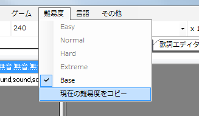
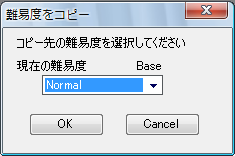

之前一直没有提到，到目前为止制作的难度是Base，它不属于四个难度（easy、normal、hard、extreme）中的任何一个。
正如其名，Base是用来制作基础部分的难度。开发者设想的方法是从这里复制到其他难度，再更改标记的种类等来增加难度。
另外，Base本身无法游玩，所以需要先复制到某个难度。
试着把Base难度复制到Normal难度吧。
选择 难度→复制当前难度。

然后，将显示的对话框中的下拉框设为Normal并点击确定。

此时只是完成了复制，要在Normal难度中修改谱面，需要切换难度。

当前的难度可以通过点击难度菜单来确认，或者从PPDEditor主窗口的标题（形如“谱面名(Normal) - PPDEditor”）来判断。
请注意，切换难度后撤销等历史信息会消失。
下一步